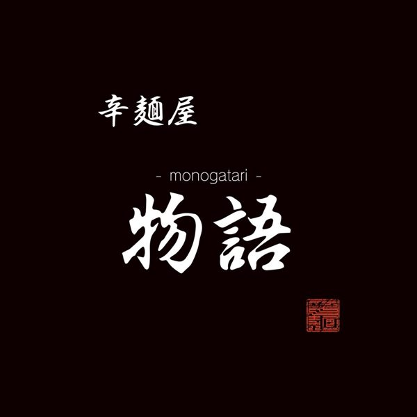
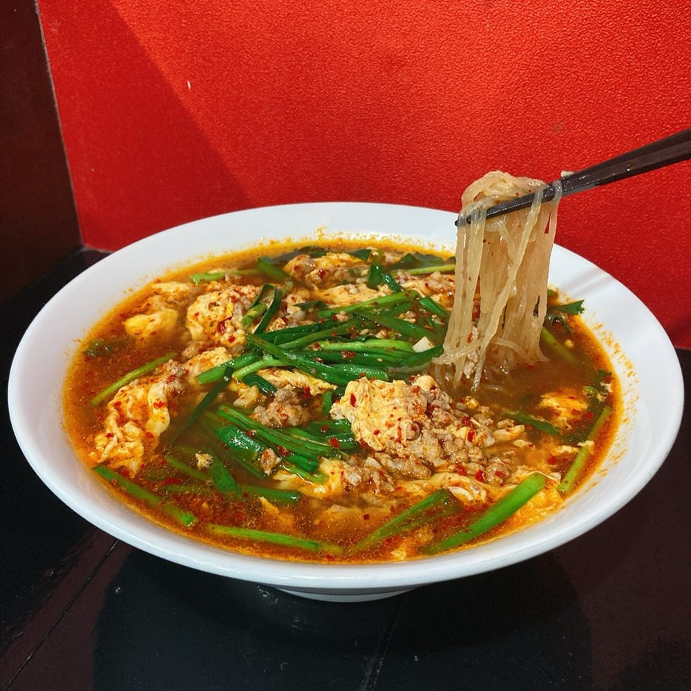
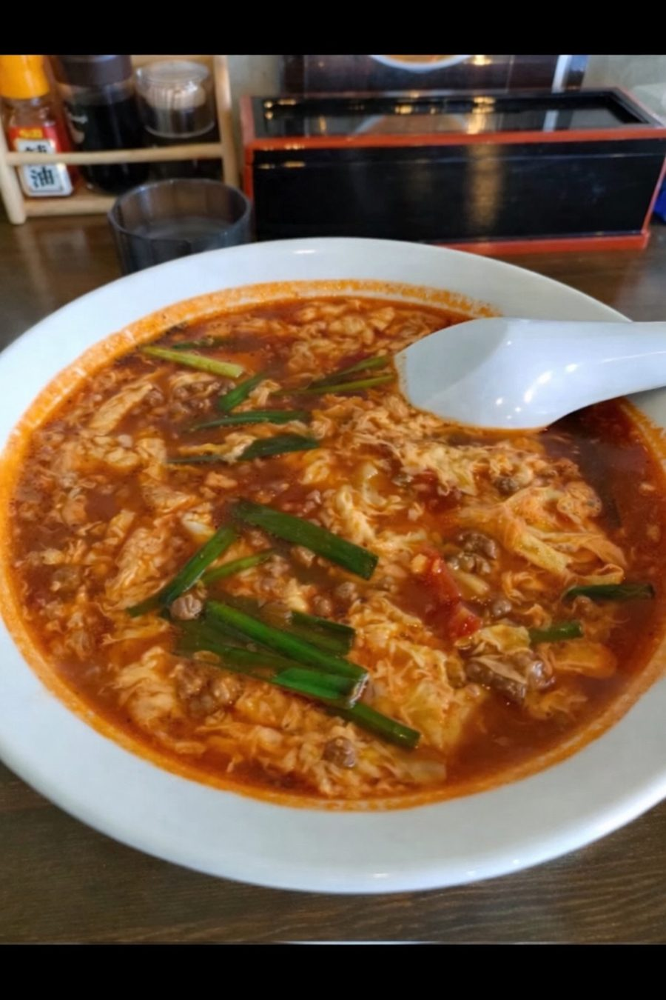
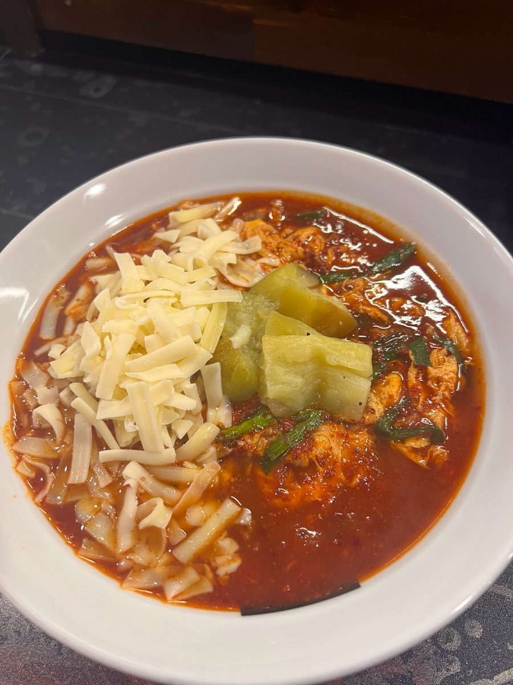

| 0辛 | ¥1,080 |
| 1〜5辛 | ¥1,140 |
| 6〜10辛 | ¥1,190 |
| 11〜15辛 | ¥1,250 |
| 16〜20辛 | ¥1,300 |
| 21〜25辛 | ¥1,360 |
| 26〜30辛 | ¥1,410 |
30辛以降は5辛ごとに +¥50。味変え（トマト／みそ）各 +¥170。
| 0辛 | ¥940 |
| 1〜5辛 | ¥990 |
| 6〜10辛 | ¥1,040 |
| 11〜15辛 | ¥1,090 |
| 16〜20辛 | ¥1,140 |
| 21〜25辛 | ¥1,190 |
| 26〜30辛 | ¥1,250 |
麺は こんにゃく麺／中華冷麺／うどん麺（ハーフ不可）／ごはん から選べます。ニンニクの有無も選べます。大盛り +¥110、デカどんぶり ¥330。

| バジルピューレ | ¥110 |
| チーズ／とき卵／高菜／メンマ／水餃子／ニンニク増量／ニラ増量 | 各¥220 |
| 焼き茄子／ミンチ増量 | 各¥280 |

| 替え玉 | ¥220 |
| 替え玉ハーフ | ¥170 |
| 替え玉うどん | ¥220 |
| なんこつ | ¥750 |
| なんこつハーフ | ¥500 |
| 焼きなんこつ | ¥760 |
| 焼きなんこつハーフ | ¥510 |
| 焼き餃子 | ¥640 |
| 水餃子 | ¥610 |
| ニラ饅頭 | ¥750 |
| 枝豆／チャンジャ／おつまみメンマ／TKG | 各¥500 |
| TKG大 | ¥750 |
| 白ごはん小 | ¥220 |
| 白ごはん | ¥280 |
| 追加タレ | ¥60 |
価格はすべて税込です。別途、容器代がかかります（辛麺1杯 ¥110、サイド・別容器のトッピング 各¥60）。ドリンク、石焼きチーズリゾット、ランチセット、〆のアイスクリームは店内のみの販売です。
オンライン注文はこちら 電話で注文：0986-36-5549